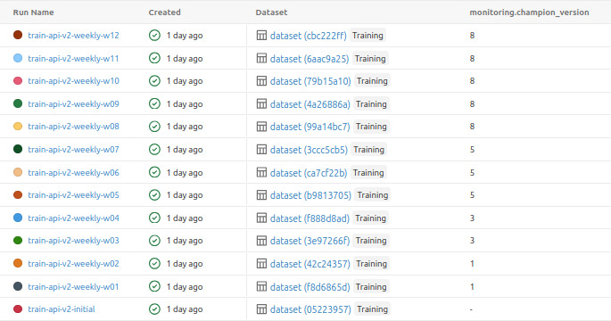

03 / 08Cycle de vie ML
Du candidat au champion, puis à la prédiction
La Train API pilote un cycle reproductible ; MLflow décide de la référence et BentoML la sert.

Règle de promotion
PR AUC candidat − PR AUC champion
> gain minimal
Comparaison sur la même fenêtre
temporelle.
Réponse Train
new_model · mlflow_run_id · candidate_version
champion_version · promotion_reason
Réponse Predict
prediction · probability · model_version